C01
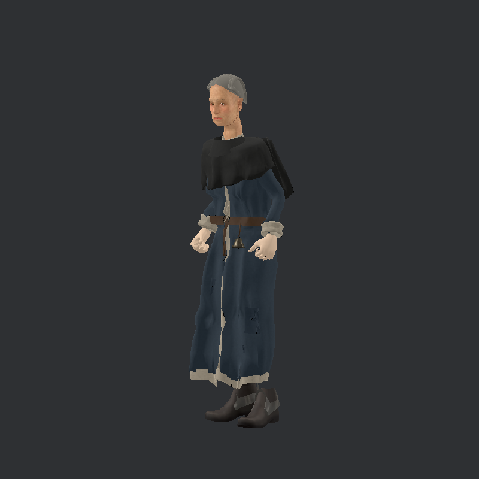
42,833 triangles / 76 skin-joint entries / 2,590,048 runtime bytes
Design comparison | Four views | Greyfen lighting | Level rear view | Native walk cycle | Motion/action samples | Art capture record | Editable Blender | Private runtime GLB
Blender source and isolated Godot Compatibility material/animation views inspected. Corrected simplification-before-atlas order removes the broad dark triangular fragments. Hair remains cap-like; wrap remains broad; small neckline seam and baseline closed-blink scleral sliver remain. 20 shared human clips acquired; sampled in-place motion is not navigation or performance acceptance. Prepared Greyfen art lighting is inspected; regional gameplay remains unverified. Unaccepted candidate.
Authored: True. Exported: True. Native art capture: True. Private integration: True. User accepted: false.
M01
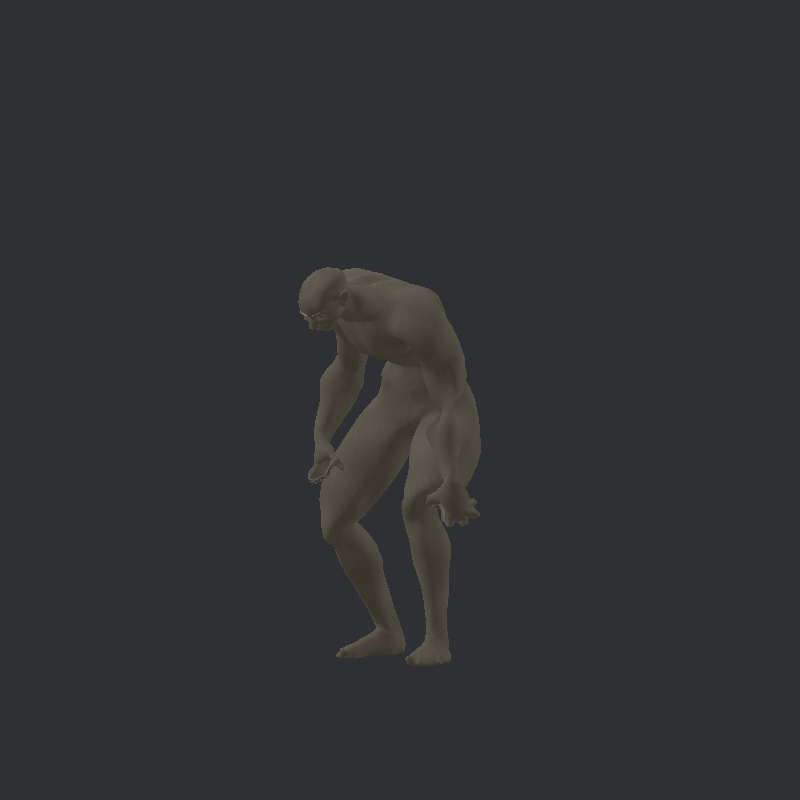
14,318 triangles / 65 skin-joint entries / 1,811,080 runtime bytes
Design comparison | Four views | Greyfen lighting | Level rear view | Native walk cycle | Motion/action samples | Art capture record | Editable Blender | Private runtime GLB
Connected anatomical candidate without shroud. Fifteen exact native contract clips, sampled with explicit rest-axis conversion; windup/recovery use attack segments. Run, sleep and death remain library adaptations. Jaw, skin and sparse hair are simplified; no claim of bespoke creature performance. Workbench geometry inspected, not gameplay acceptance.
Authored: True. Exported: True. Native art capture: True. Private integration: True. User accepted: false.
M05
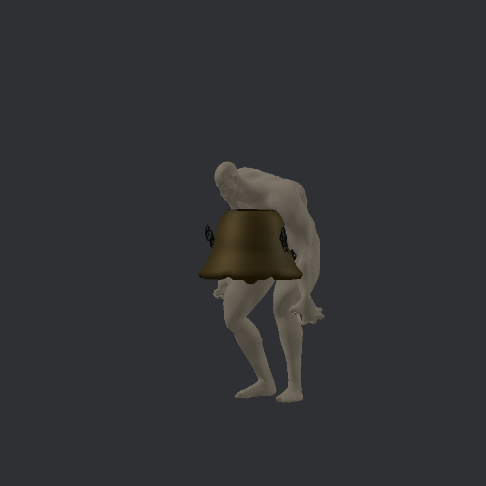
21,428 triangles / 65 skin-joint entries / 2,204,596 runtime bytes
Design comparison | Four views | Greyfen lighting | Level rear view | Native walk cycle | Motion/action samples | Art capture record | Editable Blender | Private runtime GLB
Connected giant with retained bell/clapper. Rigid bell and chains now follow pelvis; continuous fitted harness ribbons use nearest-body skin weights instead of old free-standing bars. Kinematic suspension, plain humanoid-derived anatomy/skin and sampled UAL2 performances remain limitations. No bell physics or encounter/phase/timing changes; final user acceptance pending.
Authored: True. Exported: True. Native art capture: True. Private integration: True. User accepted: false.
C04
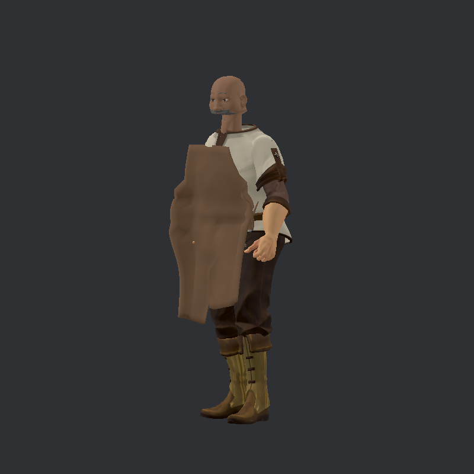
22,864 triangles / 76 skin-joint entries / 1,335,408 runtime bytes
Design comparison | Four views | Greyfen lighting | Level rear view | Native walk cycle | Motion/action samples | Art capture record | Editable Blender | Private runtime GLB
Individual face/chest/forearm shaping, split leather apron and forge keepsakes; beard is a fitted lower-face surface rather than tubes. Cleanup inherits nearest-garment bone weights, continuous overlays, one runtime assembly and actual 1K packed images. Retained library costume and simplified facial likeness remain apparent; apron/carry/contact motion requires user review. No gameplay acceptance. Extended lower garments now blend into retained thigh/calf chains with four normalized influences; this is skinning, not cloth simulation or motion acceptance. Final reviewed large-form correction strengthens role-specific torso width/depth, lower-face mass and forearm volume without rest-bone changes; no further style iteration is scheduled. Material-ID isolation identified the apparent waist hole as a hand intersection. Existing locomotion pose ownership now supplies bounded garment clearance; raw clip-only previews do not include that fit. Work, dialogue and combat poses are excluded.
Authored: True. Exported: True. Native art capture: True. Private integration: True. User accepted: false.
C02
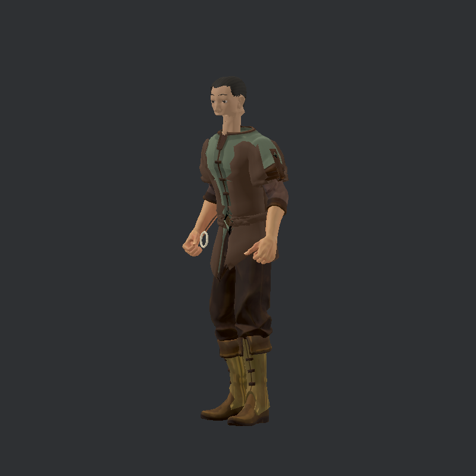
26,170 triangles / 76 skin-joint entries / 1,469,844 runtime bytes
Design comparison | Four views | Greyfen lighting | Level rear view | Native walk cycle | Motion/action samples | Art capture record | Editable Blender | Private runtime GLB
Narrow cart-working coat, prominent cheekbones, asymmetric smile and cap-flattened curls. Fitted retained costume topology, revised groom/face, 76-joint contract and real 1K material bindings. Simplified likeness and shared fantasy clothing remain; Sampled motion is not final motion/gameplay acceptance. Extended lower garments now blend into retained thigh/calf chains with four normalized influences; this is skinning, not cloth simulation or motion acceptance.
Authored: True. Exported: True. Native art capture: True. Private integration: True. User accepted: false.
C03
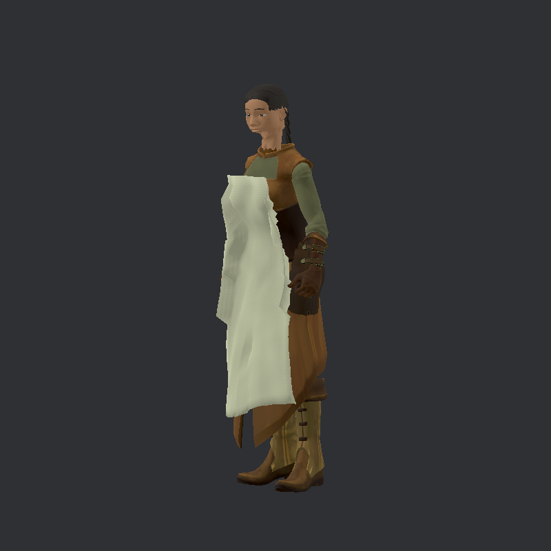
22,009 triangles / 76 skin-joint entries / 1,277,196 runtime bytes
Design comparison | Four views | Greyfen lighting | Level rear view | Native walk cycle | Motion/action samples | Art capture record | Editable Blender | Private runtime GLB
Broader facial planes, compact strong build, olive overdress/sage apron and anchored long braid. Dense fitted apron follows source garment weights; proper one-assembly export and 1K maps. Simplified face and inherited dress construction remain; facial/cloth motion and user acceptance unverified. Extended lower garments now blend into retained thigh/calf chains with four normalized influences; this is skinning, not cloth simulation or motion acceptance. Material-ID isolation identified the apparent waist hole as a hand intersection. Existing locomotion pose ownership now supplies bounded garment clearance; raw clip-only previews do not include that fit. Work, dialogue and combat poses are excluded.
Authored: True. Exported: True. Native art capture: True. Private integration: True. User accepted: false.
C11
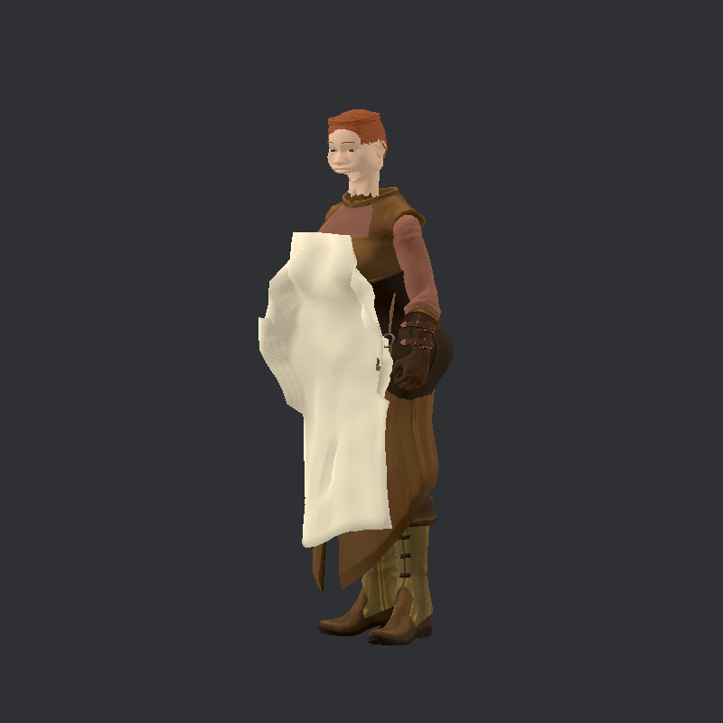
22,565 triangles / 76 skin-joint entries / 1,318,748 runtime bytes
Design comparison | Four views | Greyfen lighting | Level rear view | Native walk cycle | Motion/action samples | Art capture record | Editable Blender | Private runtime GLB
Fuller baker build/rounder asymmetric face, terracotta and indigo cloth, canvas apron and braid crown. Cleanup fits apron to dress using its weights; one skinned assembly and real packed 1K maps. Shared dress/body foundation, simplified portrait and rigid groom remain visible limitations. Fusion locomotion is art-sampled; gameplay and final user acceptance remain unverified. Extended lower garments now blend into retained thigh/calf chains with four normalized influences; this is skinning, not cloth simulation or motion acceptance. Final reviewed large-form correction strengthens role-specific torso width/depth, lower-face mass and forearm volume without rest-bone changes; no further style iteration is scheduled. Material-ID isolation identified the apparent waist hole as a hand intersection. Existing locomotion pose ownership now supplies bounded garment clearance; raw clip-only previews do not include that fit. Work, dialogue and combat poses are excluded.
Authored: True. Exported: True. Native art capture: True. Private integration: True. User accepted: false.
C05
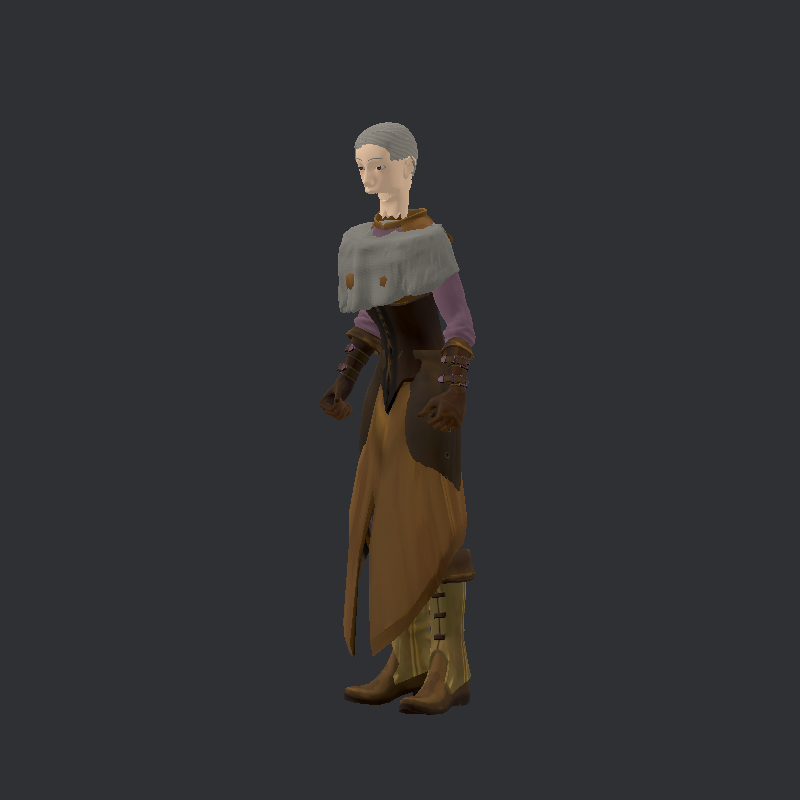
72,825 triangles / 76 skin-joint entries / 3,411,368 runtime bytes
Design comparison | Four views | Greyfen lighting | Level rear view | Native walk cycle | Motion/action samples | Art capture record | Editable Blender | Private runtime GLB
Narrow shoulders, aquiline nose and settled cheek planes; repaired plum dress, ash shawl and low coil. Fitted retained costume topology, revised groom/face, 76-joint contract and real 1K material bindings. Simplified likeness and shared fantasy clothing remain; Sampled motion is not final motion/gameplay acceptance. Extended lower garments now blend into retained thigh/calf chains with four normalized influences; this is skinning, not cloth simulation or motion acceptance.
Authored: True. Exported: True. Native art capture: True. Private integration: True. User accepted: false.
C06
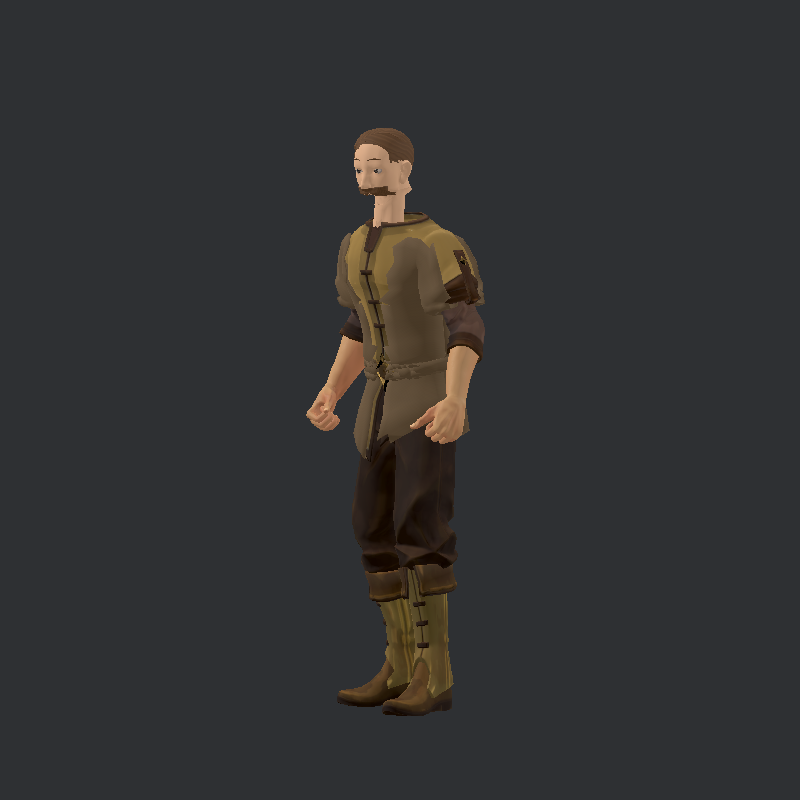
26,916 triangles / 76 skin-joint entries / 1,504,748 runtime bytes
Design comparison | Four views | Greyfen lighting | Level rear view | Native walk cycle | Motion/action samples | Art capture record | Editable Blender | Private runtime GLB
Rangier body, offset healed nose, forward hair and short beard. Open vest now uses actual body-conforming garment topology around front/sides/back, not flat strips; 76-joint contract and 1K bindings retained. Simple inherited face and fantasy boots remain evident; new garment contact and Fusion motions require user review. Extended lower garments now blend into retained thigh/calf chains with four normalized influences; this is skinning, not cloth simulation or motion acceptance.
Authored: True. Exported: True. Native art capture: True. Private integration: True. User accepted: false.
C12
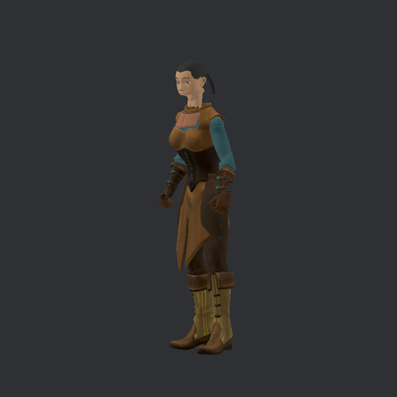
19,994 triangles / 76 skin-joint entries / 1,187,756 runtime bytes
Design comparison | Four views | Greyfen lighting | Level rear view | Native walk cycle | Motion/action samples | Art capture record | Editable Blender | Private runtime GLB
Wiry shoulders, angular face; split teal weather coat, short rust scarf, close back and practical side braid. Fitted retained costume topology, revised groom/face, 76-joint contract and real 1K material bindings. Simplified likeness and shared fantasy clothing remain; Sampled motion is not final motion/gameplay acceptance. Extended lower garments now blend into retained thigh/calf chains with four normalized influences; this is skinning, not cloth simulation or motion acceptance.
Authored: True. Exported: True. Native art capture: True. Private integration: True. User accepted: false.
C07
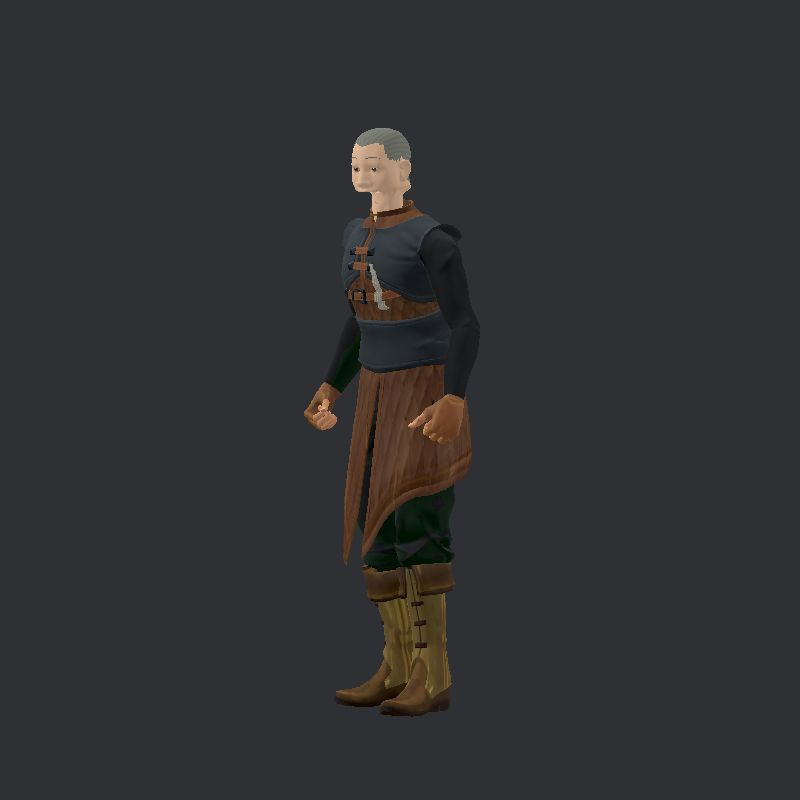
18,466 triangles / 76 skin-joint entries / 1,133,228 runtime bytes
Design comparison | Four views | Greyfen lighting | Level rear view | Native walk cycle | Motion/action samples | Art capture record | Editable Blender | Private runtime GLB
Veteran body/jaw, cropped grey hair, retained Ranger armour/coat and cut oath ribbon. Removed the stiff front-lapel/breastplate overlays; complete fitted source costume retained. Actual packed 1K textures replace erroneous 4K packed payloads. Portrait, long-coat motion and gameplay acceptance remain unverified. Extended lower garments now blend into retained thigh/calf chains with four normalized influences; this is skinning, not cloth simulation or motion acceptance.
Authored: True. Exported: True. Native art capture: True. Private integration: True. User accepted: false.
C08
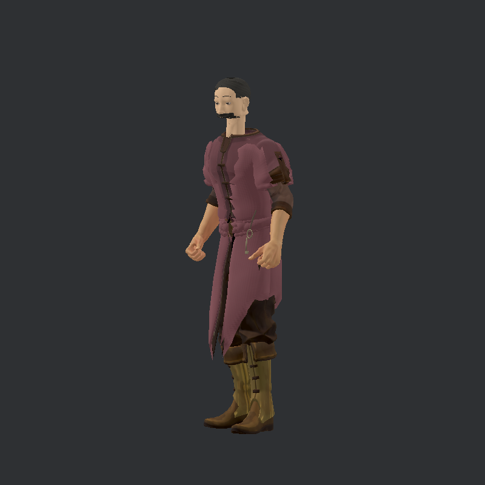
27,556 triangles / 76 skin-joint entries / 1,551,496 runtime bytes
Design comparison | Four views | Greyfen lighting | Level rear view | Native walk cycle | Motion/action samples | Art capture record | Editable Blender | Private runtime GLB
Edric retains a controlled lean face, receding part/trimmed beard, long oxblood silhouette and fitted open overcoat made from real garment topology. Beard no longer climbs the cheek. 76 facial/limb controls and binding maps retained. Shared costume foundation, simplified portrait and long-coat rig fitting/motion remain review items. Extended lower garments now blend into retained thigh/calf chains with four normalized influences; this is skinning, not cloth simulation or motion acceptance.
Authored: True. Exported: True. Native art capture: True. Private integration: True. User accepted: false.
C09
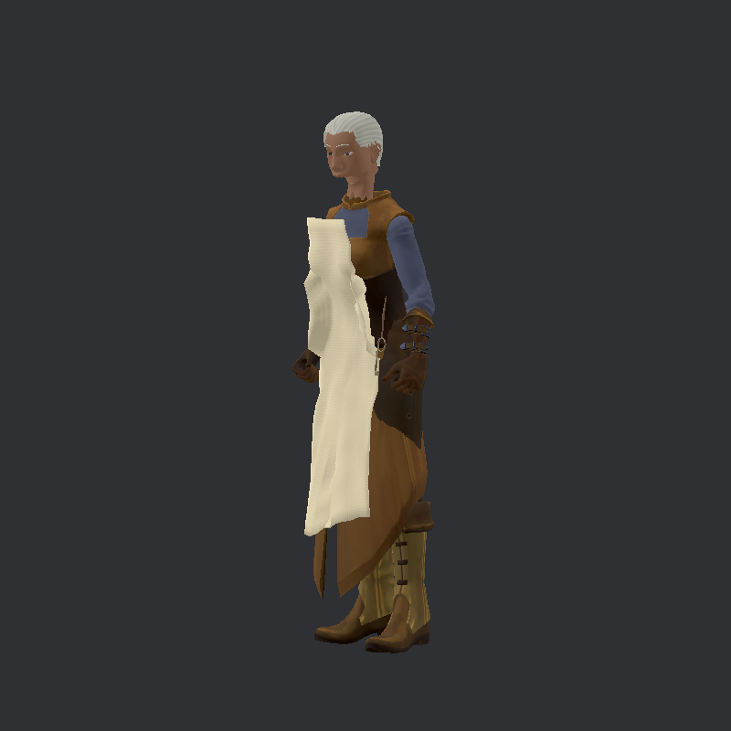
21,170 triangles / 76 skin-joint entries / 1,246,352 runtime bytes
Design comparison | Four views | Greyfen lighting | Level rear view | Native walk cycle | Motion/action samples | Art capture record | Editable Blender | Private runtime GLB
Tall spare Vale with long face, silver close coils, indigo gown and parchment archive tabard. Atlas/rig binding, full body and one skinned assembly retained. Shared costume foundation, simplified age/portrait and long garment motion remain user-review items; no acceptance claimed. Extended lower garments now blend into retained thigh/calf chains with four normalized influences; this is skinning, not cloth simulation or motion acceptance. Material-ID isolation identified the apparent waist hole as a hand intersection. Existing locomotion pose ownership now supplies bounded garment clearance; raw clip-only previews do not include that fit. Work, dialogue and combat poses are excluded.
Authored: True. Exported: True. Native art capture: True. Private integration: True. User accepted: false.
C10
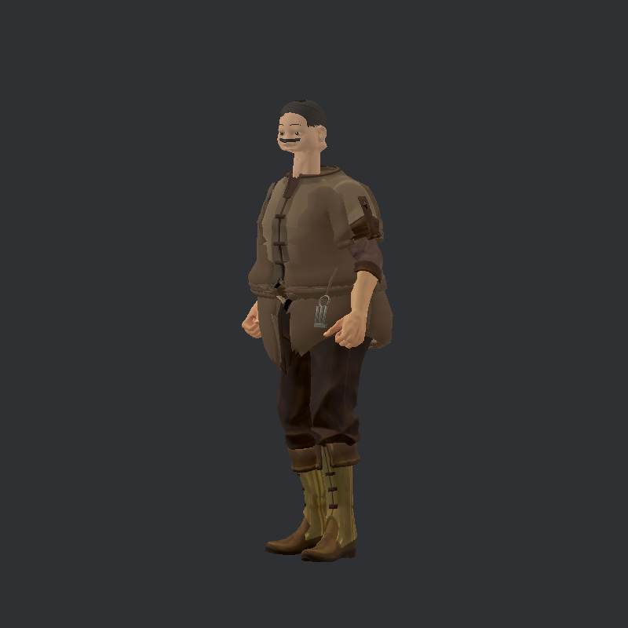
27,992 triangles / 76 skin-joint entries / 1,601,616 runtime bytes
Design comparison | Four views | Greyfen lighting | Level rear view | Native walk cycle | Motion/action samples | Art capture record | Editable Blender | Private runtime GLB
Pear-shaped waist, soft broad jaw; short tobacco coat, green cuffs, bare crown and trimmed moustache. Fitted retained costume topology, revised groom/face, 76-joint contract and real 1K material bindings. Simplified likeness and shared fantasy clothing remain; Sampled motion is not final motion/gameplay acceptance. Extended lower garments now blend into retained thigh/calf chains with four normalized influences; this is skinning, not cloth simulation or motion acceptance. Final reviewed large-form correction strengthens role-specific torso width/depth, lower-face mass and forearm volume without rest-bone changes; no further style iteration is scheduled.
Authored: True. Exported: True. Native art capture: True. Private integration: True. User accepted: false.
P01
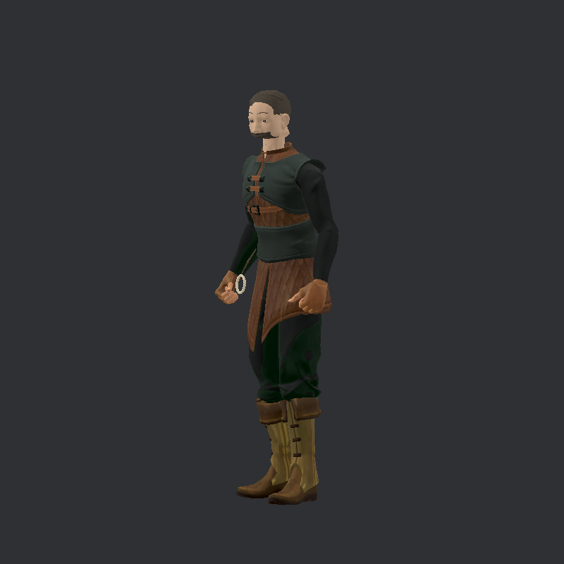
17,818 triangles / 76 skin-joint entries / 1,111,864 runtime bytes
Design comparison | Four views | Greyfen lighting | Level rear view | Native walk cycle | Motion/action samples | Art capture record | Editable Blender | Private runtime GLB
Athletic hunter, weathered cheek planes; shortened field coat, reinforced shoulder, oath cord and broken side sweep. Fitted retained costume topology, revised groom/face, 76-joint contract and real 1K material bindings. Simplified likeness and shared fantasy clothing remain; Sampled motion is not final motion/gameplay acceptance. Extended lower garments now blend into retained thigh/calf chains with four normalized influences; this is skinning, not cloth simulation or motion acceptance.
Authored: True. Exported: True. Native art capture: True. Private integration: True. User accepted: false.
M02
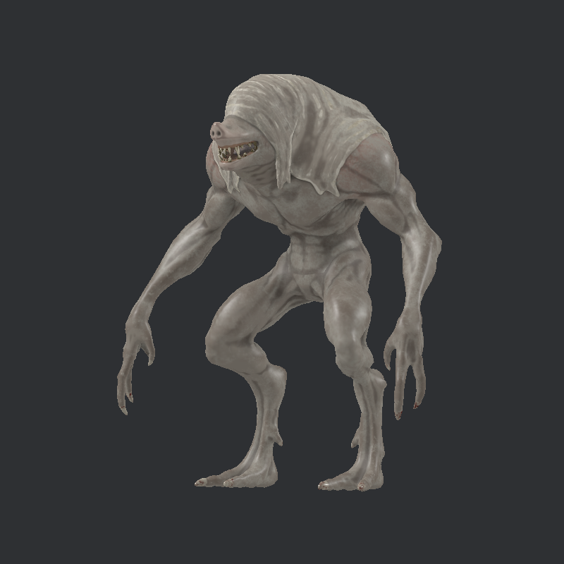
15,852 triangles / 55 skin-joint entries / 1,770,372 runtime bytes
Design comparison | Four views | Greyfen lighting | Level rear view | Native walk cycle | Motion/action samples | Art capture record | Editable Blender | Private runtime GLB
Distinct licensed Creep anatomical foundation with native jaw/claw motion, not a human recolour. 55 joints and 15 mapped native state clips. Four digits and three-segment legs differ from illustration; Run adapts Walk2; exact encounter performance remains unverified.
Authored: True. Exported: True. Native art capture: True. Private integration: True. User accepted: false.
M19
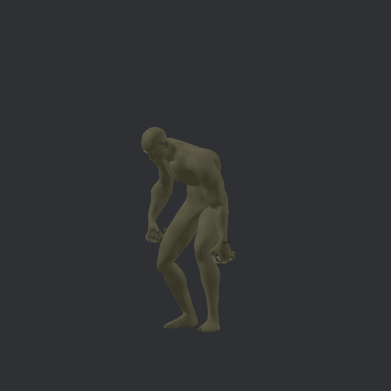
14,568 triangles / 65 skin-joint entries / 1,767,668 runtime bytes
Design comparison | Four views | Greyfen lighting | Level rear view | Native walk cycle | Motion/action samples | Art capture record | Editable Blender | Private runtime GLB
Forward shoulder mass, narrow waist, higher left shoulder, blunt muzzle and hooked finger adjustments plus controlled token cord. Connected anatomy with15nativecontractactions. Sparsefur and foldedear craftsmanship remain incomplete; five retained digits and libraryadapted performance disclosed. Sourcegeometryviews inspected, gameplay and finaluseracceptance pending.
Authored: True. Exported: True. Native art capture: True. Private integration: True. User accepted: false.
M20
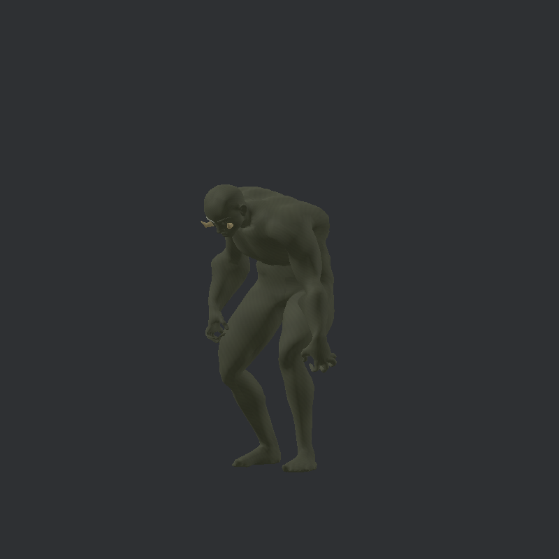
14,434 triangles / 65 skin-joint entries / 1,746,832 runtime bytes
Design comparison | Four views | Greyfen lighting | Level rear view | Native walk cycle | Motion/action samples | Art capture record | Editable Blender | Private runtime GLB
Broad chest/hips/forearms and heavy brow on retained connected humanoid anatomy. Short lateral tusks now originate inside actual cheek surfaces and follow Head, not guessed bounding-box positions. Native 65-bone contract with sampled heavy UAL2 motions. Simplified humanoid-derived anatomy, skin craft and bespoke performances remain limitations; game damage/phases unchanged.
Authored: True. Exported: True. Native art capture: True. Private integration: True. User accepted: false.
M03
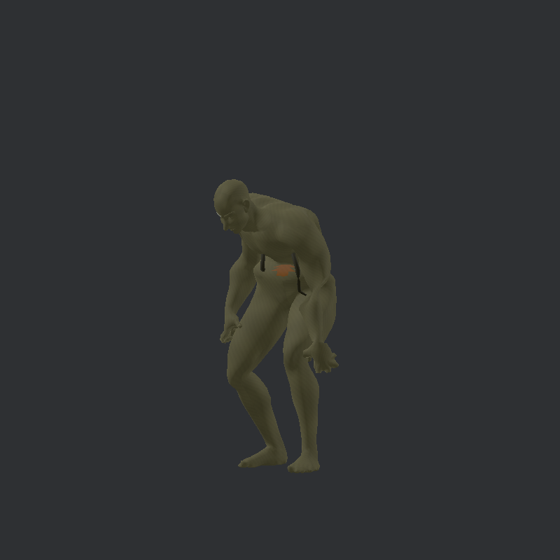
14,448 triangles / 65 skin-joint entries / 1,752,868 runtime bytes
Design comparison | Four views | Greyfen lighting | Level rear view | Native walk cycle | Motion/action samples | Art capture record | Editable Blender | Private runtime GLB
Broader pelvis/lowered abdomen, compressed neck, dragging arms and finger webs, connected amber chest patch and torso root ligatures.15nativecontractactions and connected anatomical foundation. Core is a surfacepatch, not newly authored opening/phase behavior; ligature fit and mouth remain simplified. Sourcegeometryviews inspected; gameplay and useracceptance pending.
Authored: True. Exported: True. Native art capture: True. Private integration: True. User accepted: false.
M04
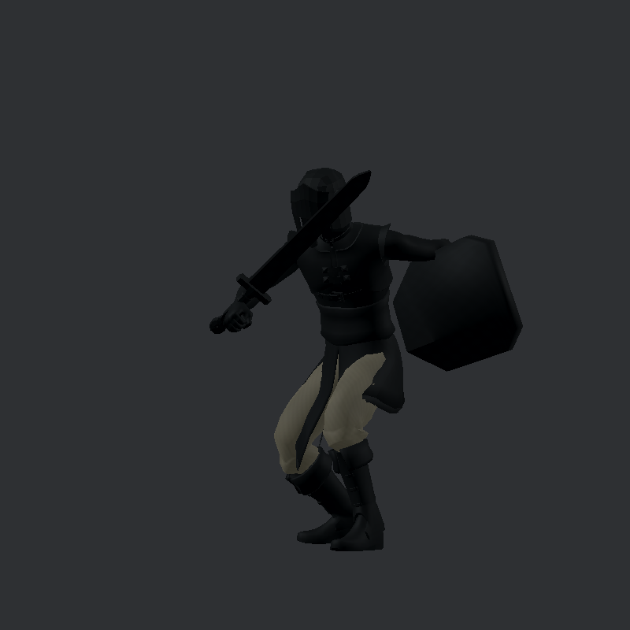
12,762 triangles / 65 skin-joint entries / 1,985,020 runtime bytes
Design comparison | Four views | Greyfen lighting | Level rear view | Native walk cycle | Motion/action samples | Art capture record | Editable Blender | Private runtime GLB
Fitted CC0 Ranger garment/body geometry, enclosed Knight helmet, straight sword and asymmetric shield replace inflated prototype body. 65-joint retained humanoid contract with adapted sword actions; no change to enemy timings. The historical Blender studio preview inherited a C07 stamp; current native boards are correctly labelled M04. Shield/sword clearance, native motion and exact illustration likeness remain unaccepted.
Authored: True. Exported: True. Native art capture: True. Private integration: True. User accepted: false.
M06
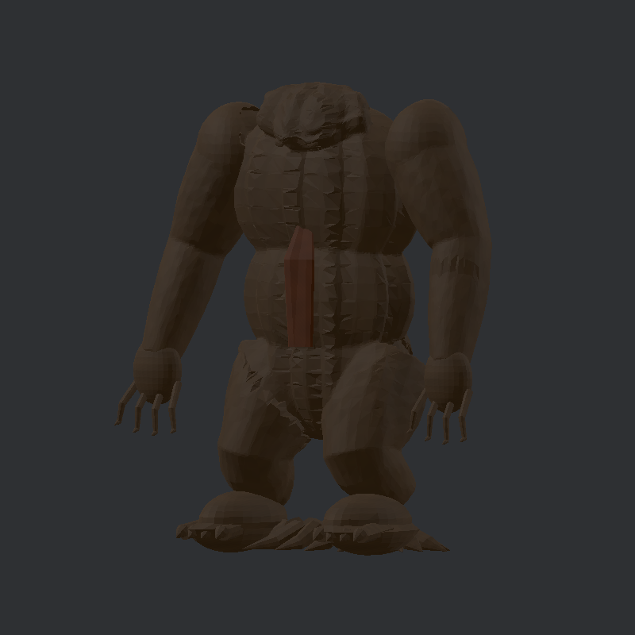
29,914 triangles / 14 skin-joint entries / 5,714,176 runtime bytes
Design comparison | Four views | Greyfen lighting | Level rear view | Native walk cycle | Motion/action samples | Art capture record | Editable Blender | Private runtime GLB
Bounded retained-root cleanup removes repeated pyramid bark inserts, adds actual trunk ridges/flattened planes and asymmetric shoulder height, preserves root feet and heartwood, reduces runtime topology. Still component-based rounded woody foundation with simplified root fingers; not complete new anatomy. Native procedural 14-joint actions retained; phase-specific bark/root motion and exact illustration likeness remain unaccepted.
Authored: True. Exported: True. Native art capture: True. Private integration: True. User accepted: false.
M08
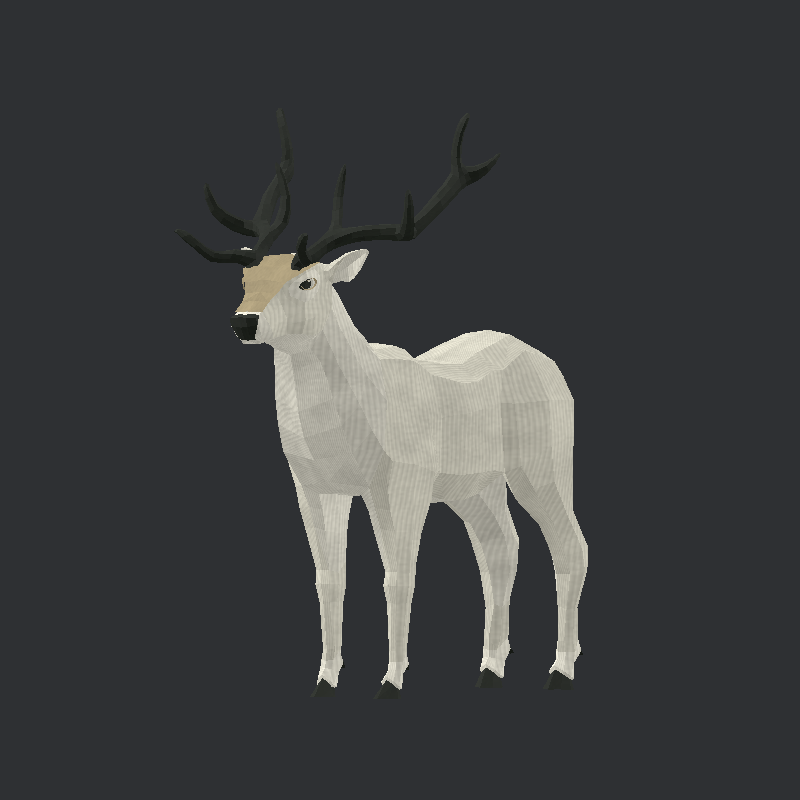
3,670 triangles / 38 skin-joint entries / 1,153,592 runtime bytes
Design comparison | Four views | Greyfen lighting | Level rear view | Native walk cycle | Motion/action samples | Art capture record | Editable Blender | Private runtime GLB
Actual animated White Hart with complete rigid antlers now explicitly Head-bound and preserved. Chest and antler spread refined; ivory/antler/hoof atlas retained. Native stag motion supplies 15 contract aliases; low-head idle substitutes unprovided sleep/windup. Low-poly facial/fur and exact covenant performances remain simplified and user-unaccepted. Earlier export omissions are preserved as failed derivatives, not current candidates.
Authored: True. Exported: True. Native art capture: True. Private integration: True. User accepted: false.
M13
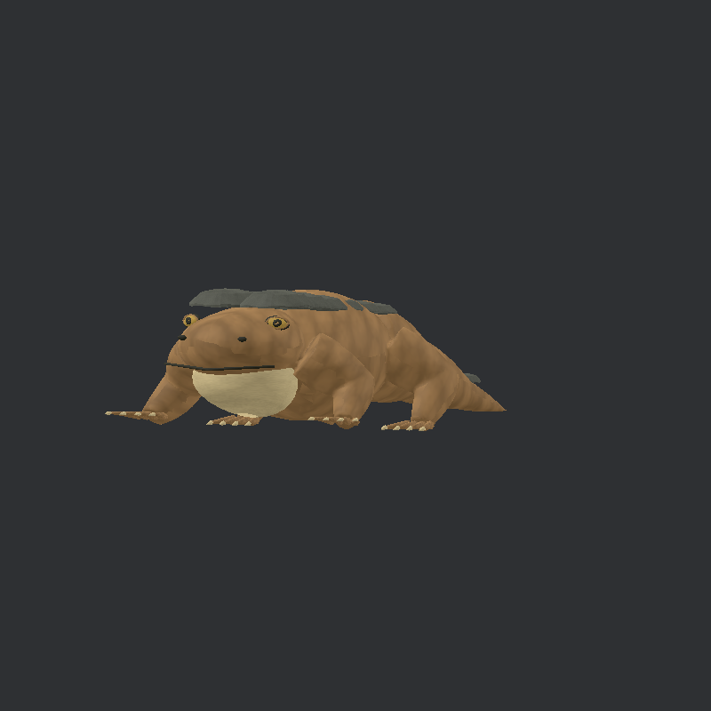
20,000 triangles / 15 skin-joint entries / 1,555,644 runtime bytes
Design comparison | Four views | Greyfen lighting | Level rear view | Native walk cycle | Motion/action samples | Art capture record | Editable Blender | Private runtime GLB
Retained four-legged reptile skeleton and connected body; flatter snout and overlapping closed shield plates replace tiny mineral inserts. Existing atlas and native procedural motion retained. Rigid plate clearance, low stance and head articulation require user/motion review; simplified anatomy remains, no heat or kiln mechanics added. Runtime shields are consolidated into one 20,000-triangle assembly; the detailed editable source is retained. Runtime-only consolidation/reduction preserves editable source and UV/material boundaries; final motion remains unaccepted.
Authored: True. Exported: True. Native art capture: True. Private integration: True. User accepted: false.
M07
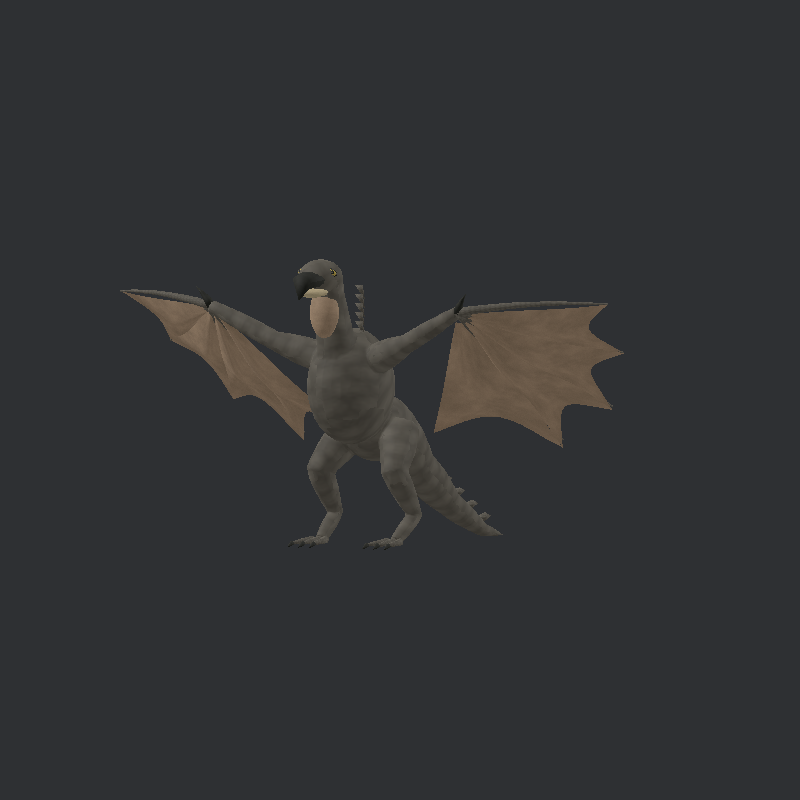
33,999 triangles / 28 skin-joint entries / 1,923,900 runtime bytes
Design comparison | Four views | Greyfen lighting | Level rear view | Native walk cycle | Motion/action samples | Art capture record | Editable Blender | Private runtime GLB
Retained compatible two-leg/two-wing drake anatomy and native rig. Hooked skull/sternum/bare throat adjusted, wing membranes folded and reweighted across existing fingers. Dedicated native procedural clips preserved, not four-legged dragon substitution. Simplified head/feet, wing deformation and arena clearance remain user-review items; triangle budget exception recorded. Runtime-only consolidation/reduction preserves editable source and UV/material boundaries; final motion remains unaccepted.
Authored: True. Exported: True. Native art capture: True. Private integration: True. User accepted: false.
M11
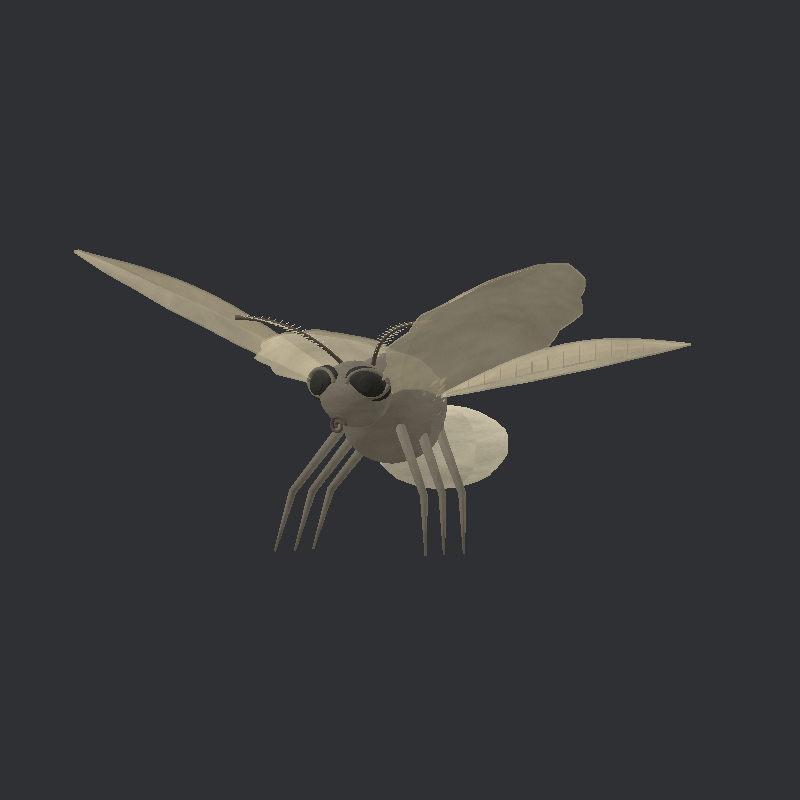
13,542 triangles / 20 skin-joint entries / 1,251,284 runtime bytes
Design comparison | Four views | Greyfen lighting | Level rear view | Native walk cycle | Motion/action samples | Art capture record | Editable Blender | Private runtime GLB
Four wings remain rigidly controlled per wing. Clear windows are not painted; uniform bounded alpha and raised veins are a best-effort membrane, not a final glass material. Existing action channels preserved; native/procedural state clips are retained; private integration/art inspection is not gameplay or user acceptance. Existing atlas reused, not a new painted PBR set. Normal/ORM maps are not exported by this revision. Rest bounds and topology metrics are measurements, not anatomical or visual acceptance.
Authored: True. Exported: True. Native art capture: True. Private integration: True. User accepted: false.
M09
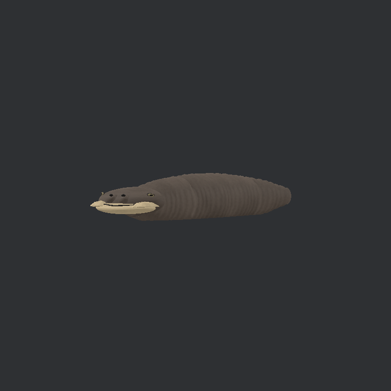
15,728 triangles / 10 skin-joint entries / 869,416 runtime bytes
Design comparison | Four views | Greyfen lighting | Level rear view | Native walk cycle | Motion/action samples | Art capture record | Editable Blender | Private runtime GLB
No burrow effects or collision changes. Existing jaw/spline motion is generic; lateral jaw plates share the Jaw control. Existing action channels preserved; native/procedural state clips are retained; private integration/art inspection is not gameplay or user acceptance. Existing atlas reused, not a new painted PBR set. Normal/ORM maps are not exported by this revision. Rest bounds and topology metrics are measurements, not anatomical or visual acceptance.
Authored: True. Exported: True. Native art capture: True. Private integration: True. User accepted: false.
M10
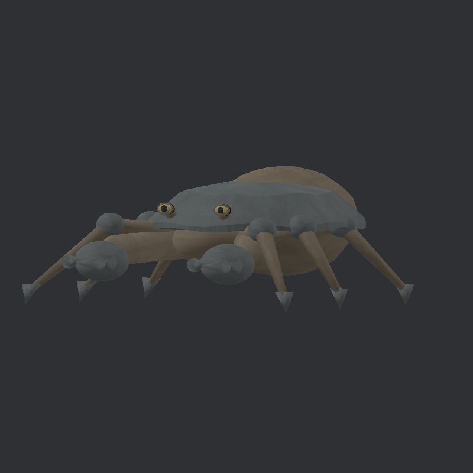
11,910 triangles / 20 skin-joint entries / 889,536 runtime bytes
Design comparison | Four views | Greyfen lighting | Level rear view | Native walk cycle | Motion/action samples | Art capture record | Editable Blender | Private runtime GLB
Existing pincer chains remain; shell/leg clearance and sideways locomotion are untested. No river weed simulation. Existing action channels preserved; native/procedural state clips are retained; private integration/art inspection is not gameplay or user acceptance. Existing atlas reused, not a new painted PBR set. Normal/ORM maps are not exported by this revision. Rest bounds and topology metrics are measurements, not anatomical or visual acceptance.
Authored: True. Exported: True. Native art capture: True. Private integration: True. User accepted: false.
M12
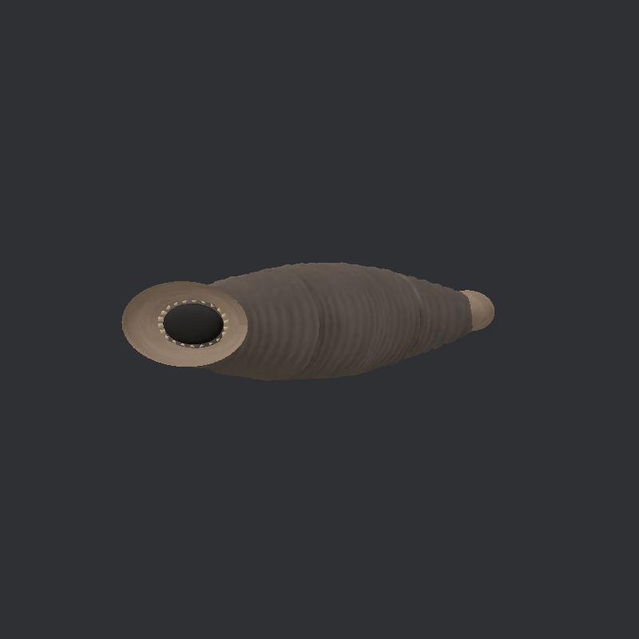
13,410 triangles / 10 skin-joint entries / 719,760 runtime bytes
Design comparison | Four views | Greyfen lighting | Level rear view | Native walk cycle | Motion/action samples | Art capture record | Editable Blender | Private runtime GLB
Existing open suction topology is retained. Teeth are recessed, not rebuilt into gum topology. No latch, compression or wetness animation authored. Existing action channels preserved; native/procedural state clips are retained; private integration/art inspection is not gameplay or user acceptance. Existing atlas reused, not a new painted PBR set. Normal/ORM maps are not exported by this revision. Rest bounds and topology metrics are measurements, not anatomical or visual acceptance.
Authored: True. Exported: True. Native art capture: True. Private integration: True. User accepted: false.
M14
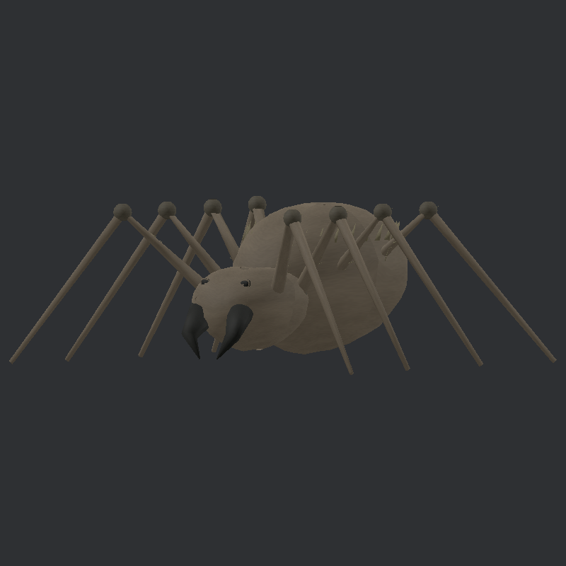
19,999 triangles / 20 skin-joint entries / 1,205,316 runtime bytes
Design comparison | Four views | Greyfen lighting | Level rear view | Native walk cycle | Motion/action samples | Art capture record | Editable Blender | Private runtime GLB
Bristles and existing limb topology remain simplified. No web, pounce, accessibility mode or contact IK implementation. Existing action channels preserved; native/procedural state clips are retained; private integration/art inspection is not gameplay or user acceptance. Existing atlas reused, not a new painted PBR set. Normal/ORM maps are not exported by this revision. Rest bounds and topology metrics are measurements, not anatomical or visual acceptance.
Authored: True. Exported: True. Native art capture: True. Private integration: True. User accepted: false.
M15
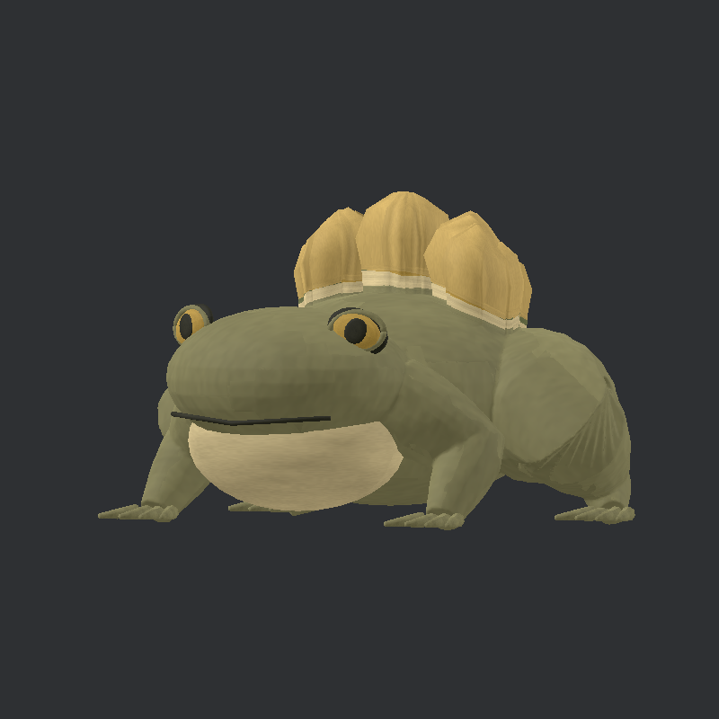
52,960 triangles / 17 skin-joint entries / 2,988,696 runtime bytes
Design comparison | Four views | Greyfen lighting | Level rear view | Native walk cycle | Motion/action samples | Art capture record | Editable Blender | Private runtime GLB
Connected extrusions and fixed-maximum morphs need deformation review. Inflation keys are unanimated; pressure-call and hop clips are not supplied. Existing action channels preserved; native/procedural state clips are retained; private integration/art inspection is not gameplay or user acceptance. Existing atlas reused, not a new painted PBR set. Normal/ORM maps are not exported by this revision. Rest bounds and topology metrics are measurements, not anatomical or visual acceptance.
Authored: True. Exported: True. Native art capture: True. Private integration: True. User accepted: false.
M16
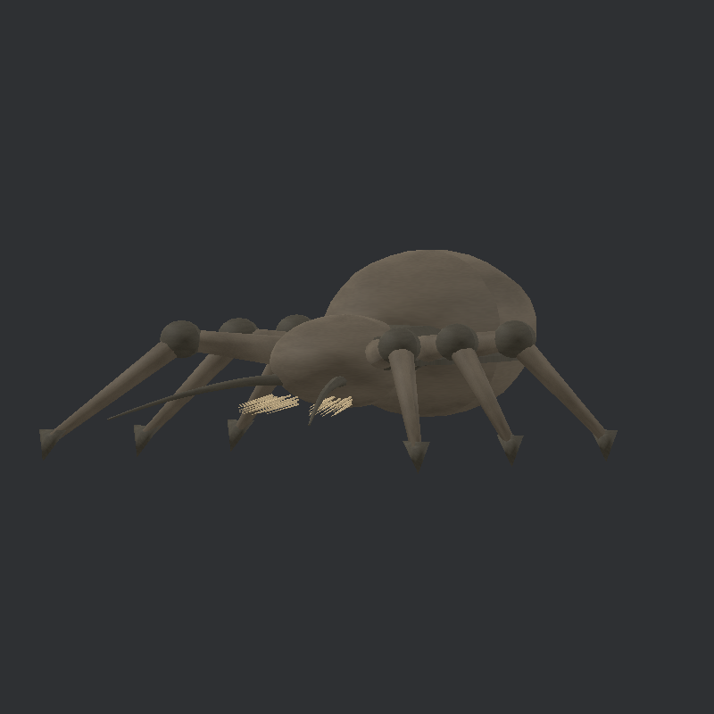
6,610 triangles / 16 skin-joint entries / 602,520 runtime bytes
Design comparison | Four views | Greyfen lighting | Level rear view | Native walk cycle | Motion/action samples | Art capture record | Editable Blender | Private runtime GLB
Brushes remain simple retained geometry. Shield/antenna clearance and feeding are untested. No new antenna controls or archive behavior. Existing action channels preserved; native/procedural state clips are retained; private integration/art inspection is not gameplay or user acceptance. Existing atlas reused, not a new painted PBR set. Normal/ORM maps are not exported by this revision. Rest bounds and topology metrics are measurements, not anatomical or visual acceptance.
Authored: True. Exported: True. Native art capture: True. Private integration: True. User accepted: false.
M17
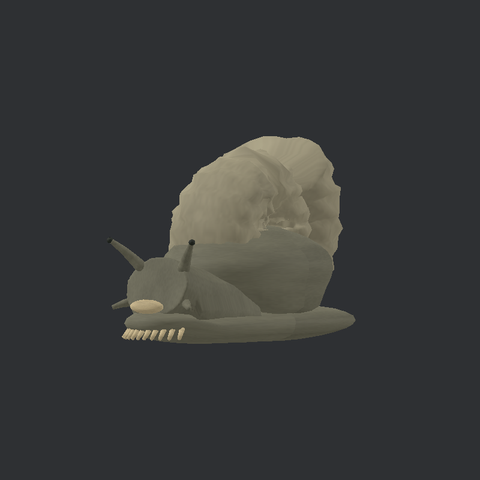
33,999 triangles / 8 skin-joint entries / 1,465,924 runtime bytes
Design comparison | Four views | Greyfen lighting | Level rear view | Native walk cycle | Motion/action samples | Art capture record | Editable Blender | Private runtime GLB
Retained spiral is refined, not full shell retopology. Sole contact and crawl remain untested; no lichen painting or shell-withdraw motion. Existing action channels preserved; native/procedural state clips are retained; private integration/art inspection is not gameplay or user acceptance. Existing atlas reused, not a new painted PBR set. Normal/ORM maps are not exported by this revision. Rest bounds and topology metrics are measurements, not anatomical or visual acceptance.
Authored: True. Exported: True. Native art capture: True. Private integration: True. User accepted: false.
M18
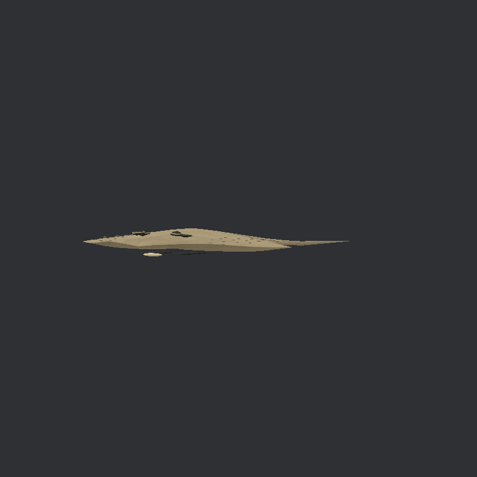
20,000 triangles / 13 skin-joint entries / 1,130,352 runtime bytes
Design comparison | Four views | Greyfen lighting | Level rear view | Native walk cycle | Motion/action samples | Art capture record | Editable Blender | Private runtime GLB
Perimeter welding is local, not whole-body retopology. Fin waves, ventral clearance, and water interaction need review; no aquatic controller changes. Existing action channels preserved; native/procedural state clips are retained; private integration/art inspection is not gameplay or user acceptance. Existing atlas reused, not a new painted PBR set. Normal/ORM maps are not exported by this revision. Rest bounds and topology metrics are measurements, not anatomical or visual acceptance.
Authored: True. Exported: True. Native art capture: True. Private integration: True. User accepted: false.